I downloaded Tweets.csv and installed the Text add-on for Orange. After restarting Orange the Text Mining widgets (Corpus, Preprocess Text, Word Cloud, Bag of Words, Document Map) showed up in the widget list.
I opened Tweets.csv with the File widget. The file has 14,640 tweets about airlines and 15 columns. I set every column to skip except the five text columns: name, text, tweet_coord, tweet_created and tweet_location. Then I connected the File widget to a Data Table.
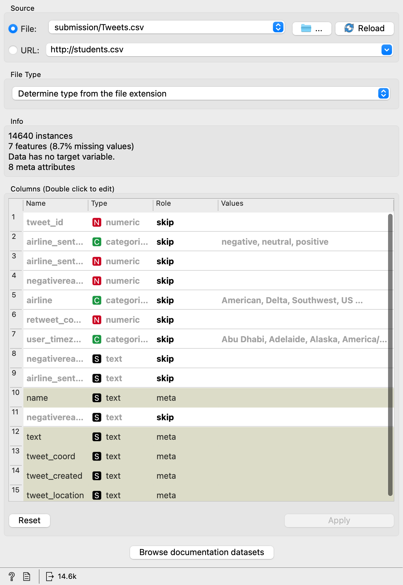
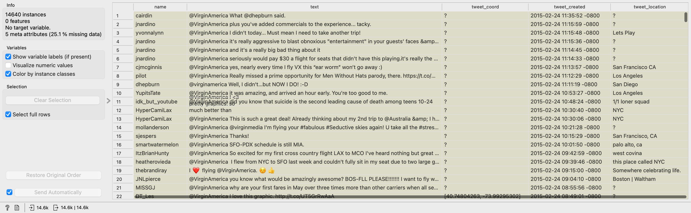
| name | text | tweet_coord | tweet_created | tweet_location |
|---|---|---|---|---|
| cairdin | @VirginAmerica What @dhepburn said. | (empty) | 2015-02-24 11:35:52 -0800 | (empty) |
| jnardino | @VirginAmerica plus you've added commercials to the experience... tacky. | (empty) | 2015-02-24 11:15:59 -0800 | (empty) |
| yvonnalynn | @VirginAmerica I didn't today... Must mean I need to take another trip! | (empty) | 2015-02-24 11:15:48 -0800 | Lets Play |
| jnardino | @VirginAmerica it's really aggressive to blast obnoxious "entertainment" in your guests' faces & they have little recourse | (empty) | 2015-02-24 11:15:36 -0800 | (empty) |
| jnardino | @VirginAmerica and it's a really big bad thing about it | (empty) | 2015-02-24 11:14:45 -0800 | (empty) |
Looking at the table, every tweet has a name, a text and a time. The other two columns are mostly empty. Only 1,019 tweets have coordinates and 9,907 have a location. The location is whatever the user typed in their profile, so it is not always a real place (for example "Lets Play").
I connected the File widget to a Data Sampler and set it to a fixed proportion of 10%. That gives 1,464 tweets. Then I connected it to the Corpus widget. When I opened the Corpus widget it had picked the name column as the text feature, so I moved name out and put text in. Now text is the only column under Used text features.
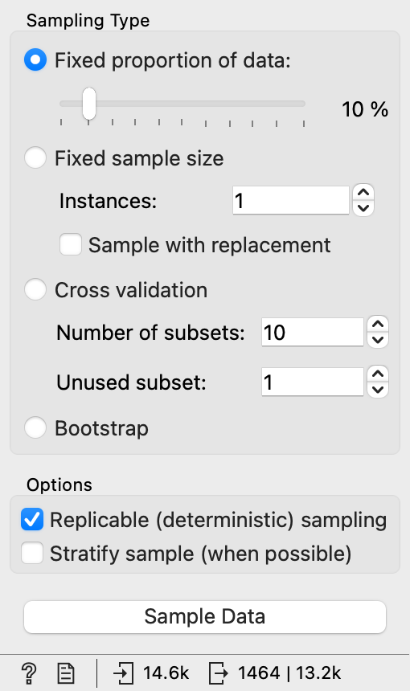
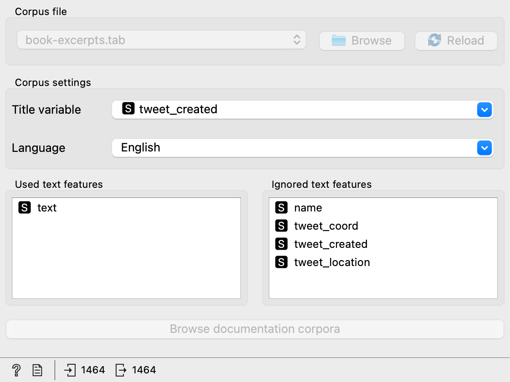
Then I connected the Corpus to a Word Cloud.
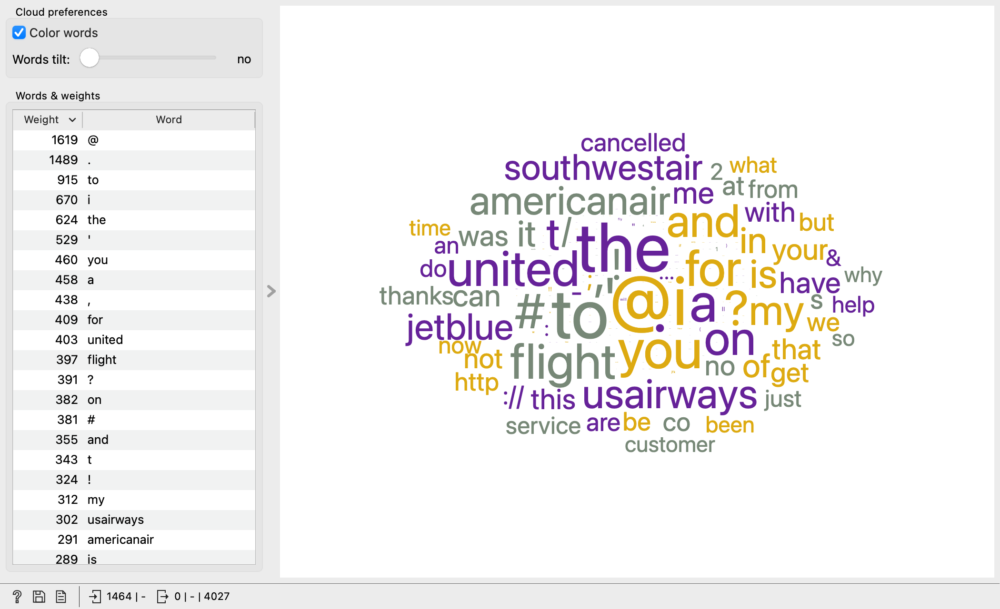
What I see. The word cloud is mostly noise. The biggest things are not really words. The top one is the @ sign (1619 times) and then the period (1489). After that it is small common words like to (915), i (670), the (624), you, a and for. There are also pieces of links like http, t and co, and other symbols like # and ?.
The only useful words I can find are the airline names (united, usairways, americanair, southwestair, jetblue) and flight. The airline names are there because every tweet starts with @ and the airline. So without cleaning the text, the word cloud does not tell me much about what people are saying.
I put a Preprocess Text widget between the Corpus and the Word Cloud. In Transformation I checked Lowercase, Remove accents and Remove urls. I left Tokenization the way it was. In Filtering I kept Stopwords, added Regexp with its default pattern, and checked Most frequent tokens with 100. Then I added N-grams Range and set it to 1 to 2.
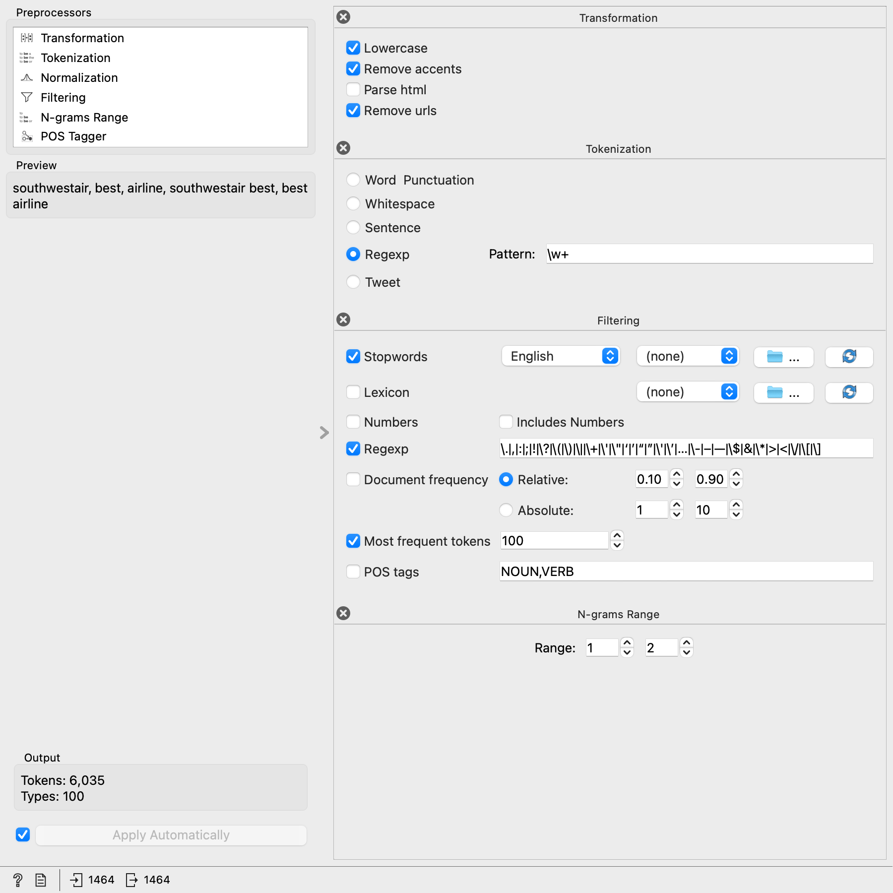
After this the corpus has 6,035 tokens and 100 different words.
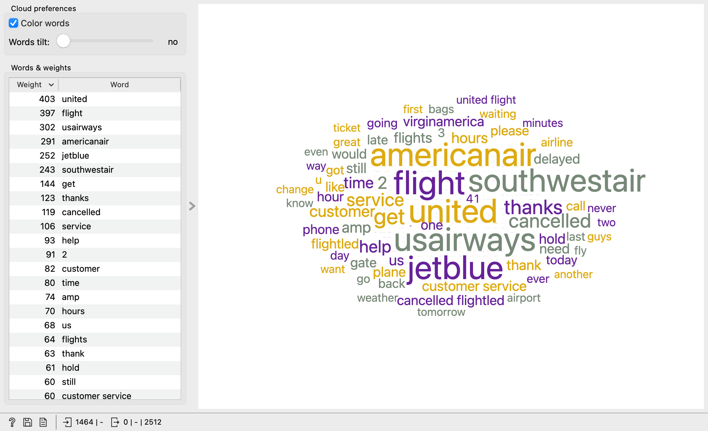
What I see. This word cloud is a lot easier to read. The symbols, the links and the small words like "to" and "the" are gone. The biggest words are still the airline names: united (403), usairways (302), americanair (291), jetblue (252), southwestair (243), virginamerica (59). United is the airline people tweet at the most in my sample.
The other big word is flight (397). After that the words are about problems and customer service: cancelled (119), service (106), help (93), customer (82), time (80), hours (70), hold (61). There are polite words too, like thanks (123) and thank. So most of these tweets look like people asking an airline for help or complaining about a flight.
Because the n-grams range is 1 to 2, there are also two word phrases, like "customer service" (60), "cancelled flightled" and "united flight". A few things are still not clean. "amp" is left over from the & code for the & sign, "flightled" is a strange word that is in the data itself ("Cancelled Flightled"), and "2" is used as a short way to write "to".
I connected Preprocess Text to the Document Map widget. I picked tweet_location as the Region attribute and USA as the Map type.
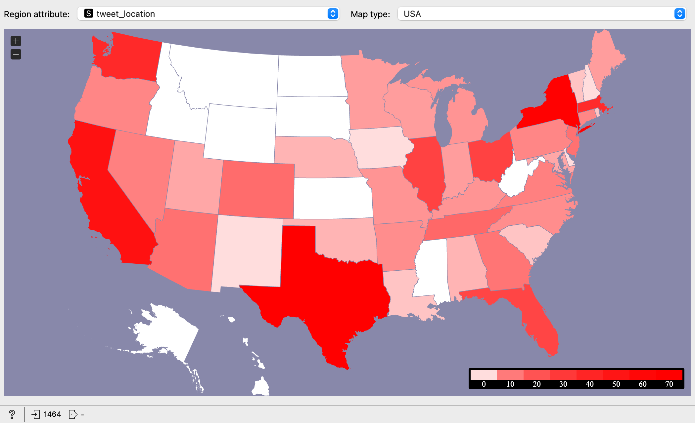
| State | Tweets |
|---|---|
| Texas | 66 |
| New York | 65 |
| California | 53 |
| Washington | 38 |
| Massachusetts | 37 |
| Illinois | 26 |
| Ohio | 26 |
| Florida | 25 |
Describing the map. The map colors each state by how many tweets came from there. Darker red means more tweets. The darkest states are Texas (66), New York (65) and California (53), then Washington, Massachusetts, Illinois, Ohio and Florida. These are states with a lot of people and big airports, so that makes sense. The states in the middle north, like Montana, Wyoming and the Dakotas, are white because no tweet in my sample matched them.
The map only shows part of the data. Out of the 1,464 tweets in my sample, 982 have a location and only 505 of them could be matched to one of 41 states. The rest are empty, outside the US, or not a real place. Also the widget matches by name, so I would not trust every count. For example Washington is high, and some of those are probably Washington, D.C. and not the state.
I connected Preprocess Text to the Bag of Words widget. I picked Count for Term Frequency and Smooth IDF for Document Frequency. The output is a table with one row for each of the 1,464 tweets and 2,512 columns, one for each word or two word phrase. Count means the number is how many times the word is in the tweet, and Smooth IDF makes words that are in a lot of tweets count less.
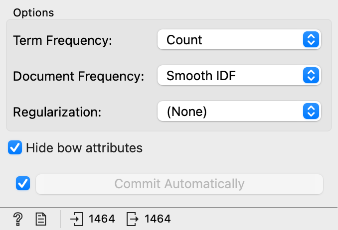
I connected Bag of Words to the Distances widget and picked Jaccard. Then I connected Distances to Hierarchical Clustering, set the linkage to Complete, and picked Top N with N = 3.
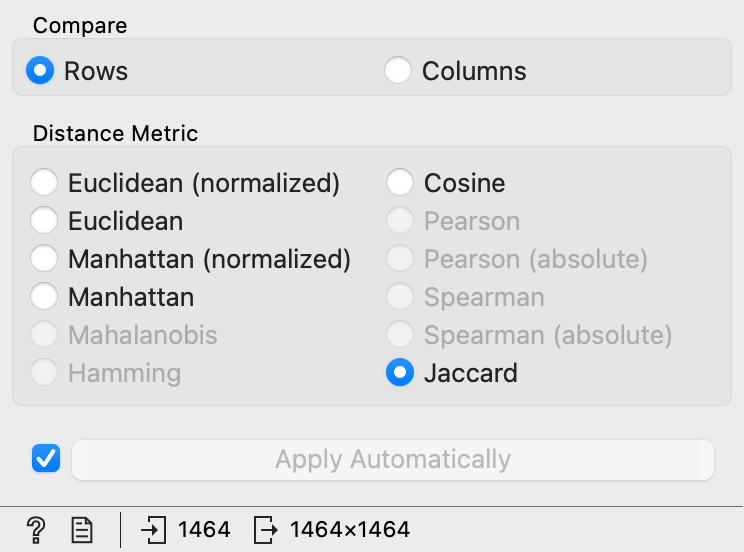
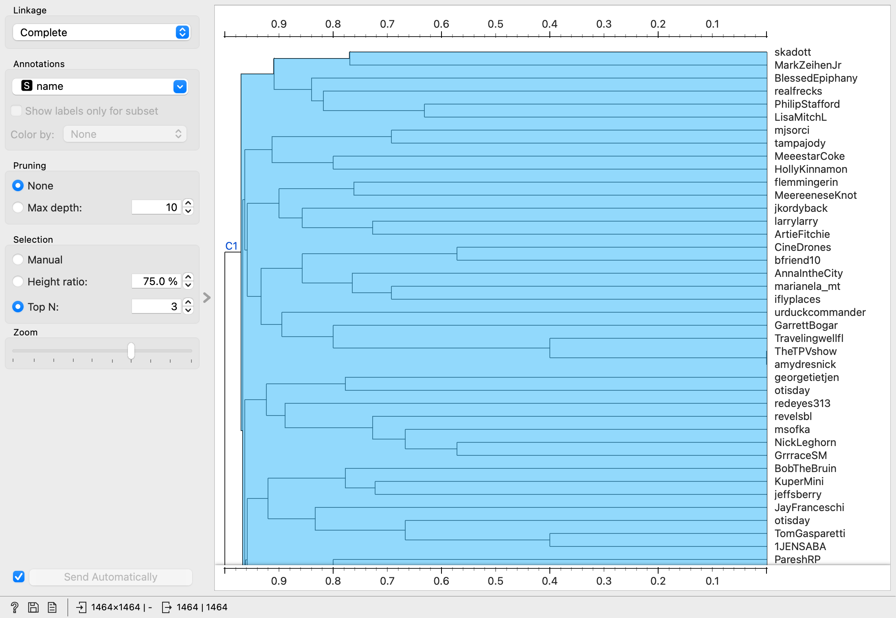
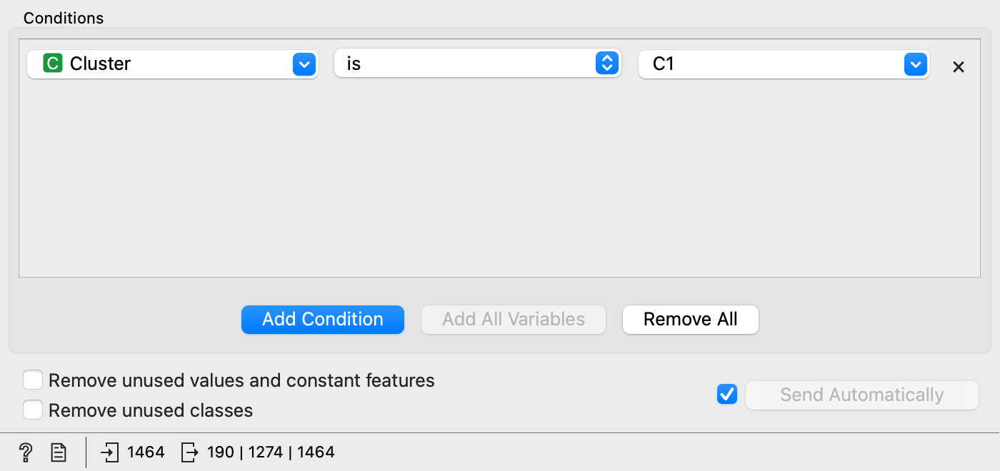
I connected the Selected Data output to three Select Rows widgets. Each one has the condition "Cluster is" C1, C2 or C3. Then each Select Rows goes into its own Word Cloud. The word clouds here show the bag of words weights and not plain counts, so the numbers on the left are small.
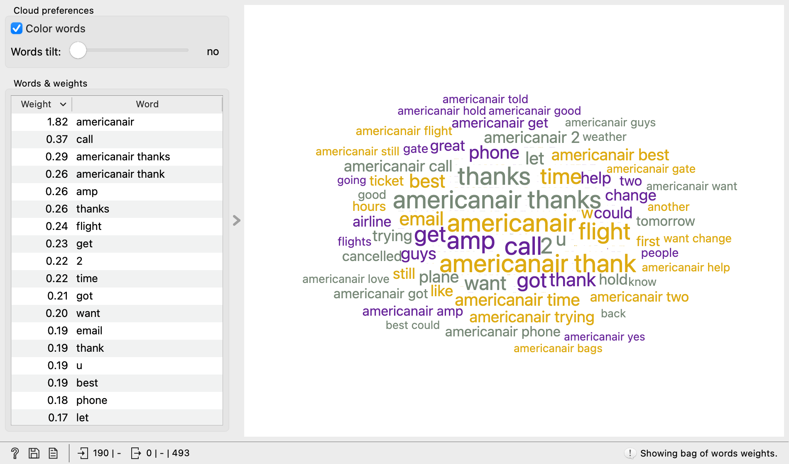
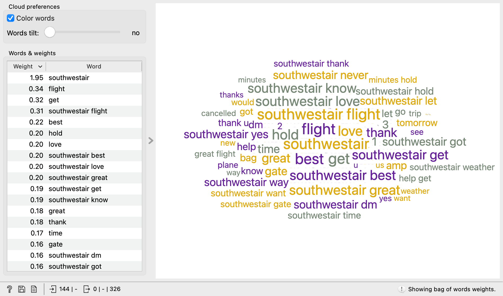
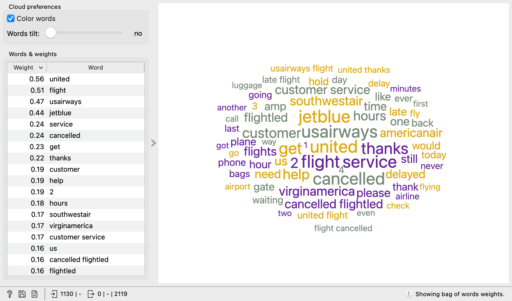
| Cluster | Tweets | Most common words |
|---|---|---|
| C1 | 190 | americanair (100%), flight (13%), thanks (10%), get (10%), call (9%), amp (8%), time (7%) |
| C2 | 144 | southwestair (100%), flight (17%), get (13%), southwestair flight (7%), best (6%), time (6%), hold (6%) |
| C3 | 1130 | united (34%), usairways (26%), flight (25%), jetblue (21%), get (9%), americanair (9%), cancelled (9%) |
Describing the word clouds.
Compare and contrast. What is the same is that all three clouds have the same everyday words: flight, get, thanks, help, time. What is different is the airline. C1 and C2 each have one airline name that is much bigger than everything else, and C3 is a mix of the other airlines. So the clustering split the tweets by which airline they were sent to, not by what the tweet is about. I think this is because Jaccard distance only looks at which words two tweets share. The tweets are short, so the airline name is usually the main word two tweets have in common. The clusters are also not even. C3 has 77% of the tweets.
I connected Bag of Words to a k-Means widget and set the number of clusters to 3. The widget shows a warning that sparse data cannot be normalized, which is normal for bag of words data. Then I did the same thing as in step 7, with three Select Rows widgets and three Word Clouds.
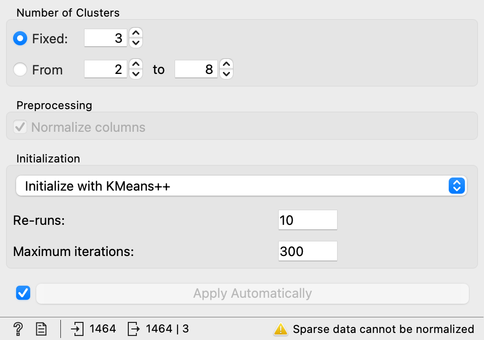
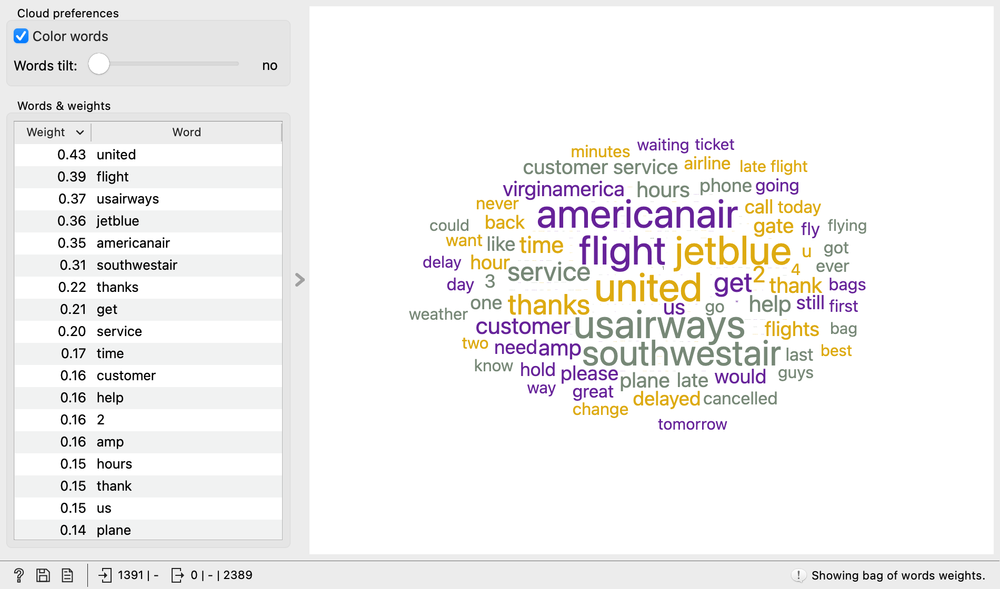
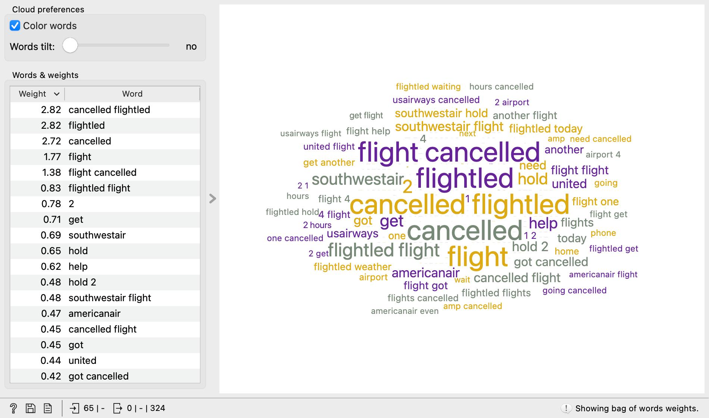
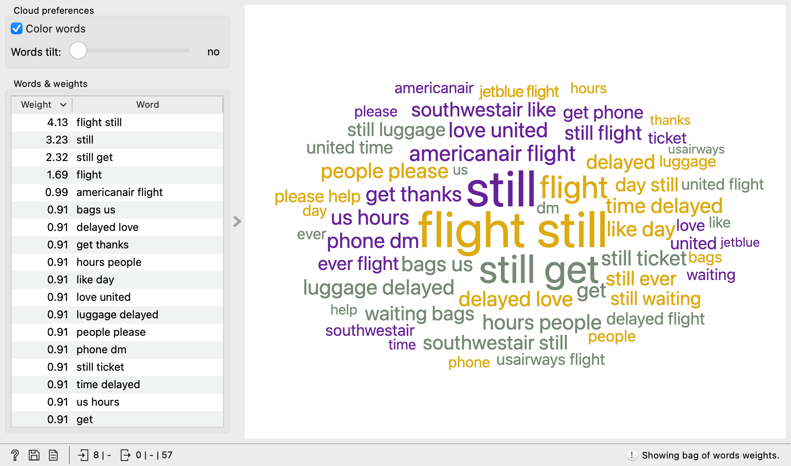
| Cluster | Tweets | Most common words |
|---|---|---|
| C1 | 1391 | united (26%), usairways (20%), flight (20%), americanair (19%), jetblue (17%), southwestair (16%), get (9%) |
| C2 | 65 | cancelled (97%), flightled (83%), cancelled flightled (83%), flight (78%), southwestair (34%), flight cancelled (34%), get (29%) |
| C3 | 8 | still (100%), flight (75%), flight still (75%), get (38%), still get (38%), united (25%), americanair flight (25%) |
Describing the word clouds.
Compare and contrast. C1 is a general cloud with no topic. C2 and C3 are small but they each have a clear topic, and the topic is a word or phrase, not an airline. The sizes are very uneven. 95% of the tweets are in C1, so k-Means mostly pulled out two small groups and left everything else together.
Hierarchical clustering compared to k-Means.
| k-Means C1 | k-Means C2 | k-Means C3 | |
|---|---|---|---|
| Hierarchical C1 | 189 | 1 | 0 |
| Hierarchical C2 | 143 | 0 | 1 |
| Hierarchical C3 | 1059 | 64 | 7 |
I changed the distance in the Distances widget and the linkage in Hierarchical Clustering, and looked at the three word clouds each time. I kept Top N = 3 the whole time.
| Distance | Linkage | Cluster sizes (C1, C2, C3) | Top word in each cluster |
|---|---|---|---|
| Jaccard | Complete | 190, 144, 1130 | americanair, southwestair, united |
| Jaccard | Single | 1, 1, 1462 | getting 2, help fly, united |
| Jaccard | Average | 45, 219, 1200 | virginamerica, jetblue, united |
| Jaccard | Ward | 214, 192, 1058 | jetblue, southwestair, united |
| Cosine | Complete | 22, 12, 1430 | americanair, call, united |
| Cosine | Ward | 57, 31, 1376 | jetblue, united, united |
| Euclidean | Complete | 1, 1, 1462 | us, 4 days, united |
| Euclidean | Ward | 1329, 43, 92 | united, cancelled, 2 |
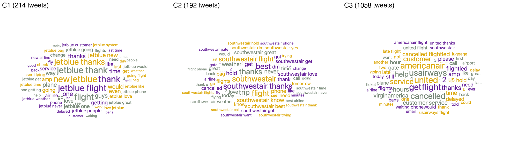
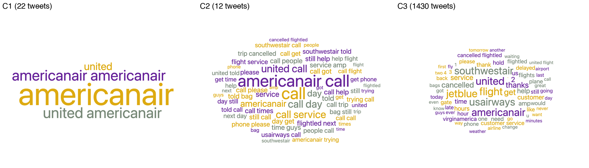
What I noticed.
So the clusters depend a lot on the settings. Different settings gave me different stories about the same tweets, so I would not trust one clustering without checking the word clouds.
This is my whole workflow. I labelled each part with a text box and an arrow, and renamed the widgets so it is clear what each one does.
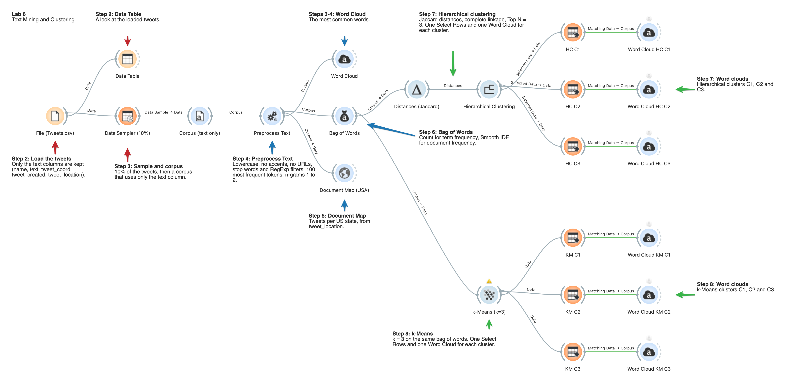